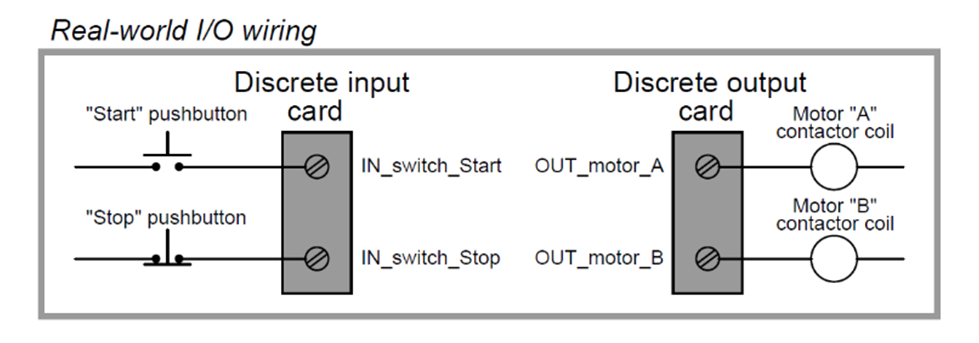
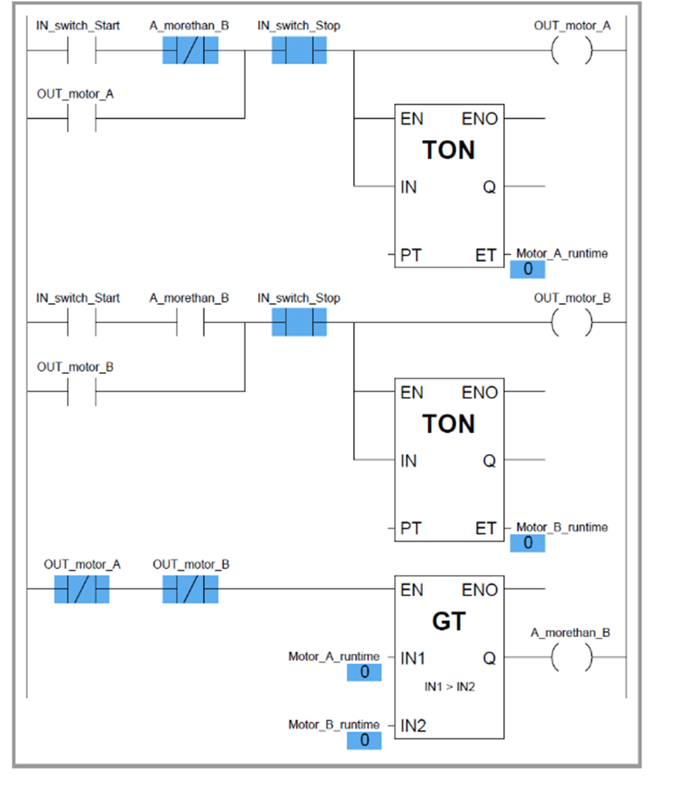

Greater Than
A Greater Than ( > ) Compare Instruction in PLC programming is used to compare two values and determine whether one value is greater than the other.
- Function: Evaluates a condition by comparing two operands to check if the first value is greater than the second.
- Output: Boolean (TRUE or FALSE) depending on whether the comparison condition is satisfied.
-
Type:
- Greater Than ( > ): Checks whether IN1 > IN2.
Applications
- Comparing process values such as temperature, pressure, or speed against a predefined setpoint.
- Monitoring sensor values to trigger alarms or control actions.
- Verifying whether counters or timers have exceeded a specific threshold.
Examples
- Compare the current temperature of a system with the maximum allowable temperature.
- Check if a production count is greater than the required quantity.
- Determine whether a motor speed exceeds a safe operating limit.
Syntax / Representation
In LAD/FBD:
- The instruction is represented as a comparison block:
|--[ > ]--|
-
Inputs:
- IN1: First value (e.g., sensor reading)
- IN2: Second value (e.g., setpoint)
-
Output:
- Q: TRUE if IN1 > IN2, otherwise FALSE
Example of Greater Than Compare Instruction
- two retentive on-delay timers keep track of each electric motor’s total run time, storing the run time values in two registers in the PLC’s memory:
- Motor A runtime and Motor B runtime. These two integer values are input to the “greater than” instruction box for comparison.
- If motor A has run longer than motor B, motor B will be the one enabled to start up next time the “start” switch is pressed.
- If motor A has run less time or the same amount of time as motor B (the scenario shown by the blue-highlighted status indications), motor A will be the one enabled to start.
- The two series-connected virtual contacts OUT motor A and OUT motor B ensure the comparison between motor run times is not made until both motors are stopped.
- If the comparison were continually made, a situation might arise where both motors would start if someone happened to press the Start pushbutton with one motor is already running.

